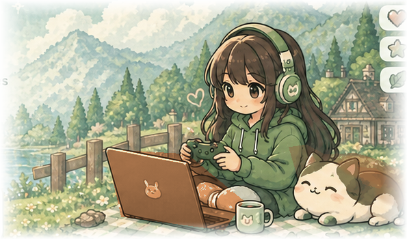
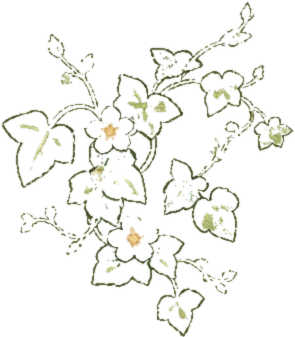
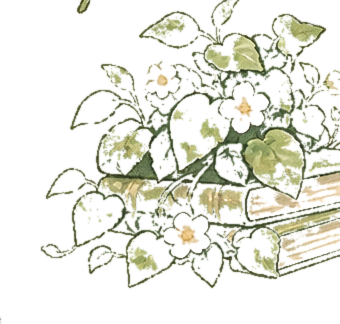
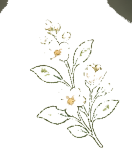
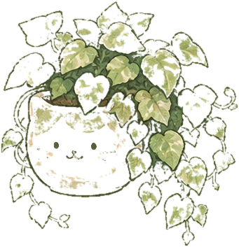
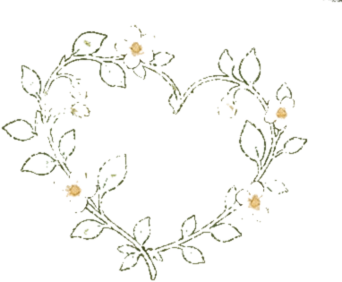
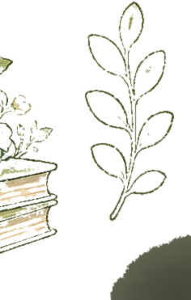

Organize
Keep daily tasks and homework in one place.
ARTIFACT 1 ♡ COURSE PROJECT
A personal portfolio for TCSS 490 at UWT, built with HTML, CSS, JavaScript, and help from OpenAI.
▶ Explore Artifacts


ARTIFACT 2 ✦ PROJECT
Organize ✧ Motivate ✧ Get it done
HatchQuest helps organize daily tasks and homework assignments with a fun, motivating method: complete your tasks to hatch cute animals and celebrate your progress.

HatchQuest ♡


Keep daily tasks and homework in one place.
Hatch cute animals as you finish tasks.
Make progress one task at a time.
ARTIFACT 3 ✧ PROJECT
Make something delicious with what you already have.
This website keeps track of the items in your pantry and helps you find recipes based on what you have left. Tell the AI what you’re in the mood for, and it can suggest a recipe that fits. You can also view nutrition details and other helpful recipe information.
Save recipes to your own board, then click Made when you cook one. The ingredients used are subtracted from your virtual pantry, helping your inventory stay up to date.
You can add pantry items by using your camera or uploading an image to scan what the item is.
Access note: For now, you’ll need to log in to Claude with your TCSS 490 group account to access this artifact.
ARTIFACT 4 ✧ PLACEHOLDER
A project designed to help another person or community.

A Discord organization bot with “when to meet” polls, shared schedules where friends can join, and optional task gates that require everyone to mark a task complete before the group moves on.
Plan: Map out the scheduling, polling, and group task settings before building the bot.
ARTIFACT 5 ✧ PLACEHOLDER
A bold idea that could grow into something ambitious.

An interactive 3D globe with a year or date slider. Choosing a time would show major events and an AI-assisted summary of what life was like in each country or U.S. state.
Plan: Explore historical data, timeline controls, and ways to present regional summaries clearly.